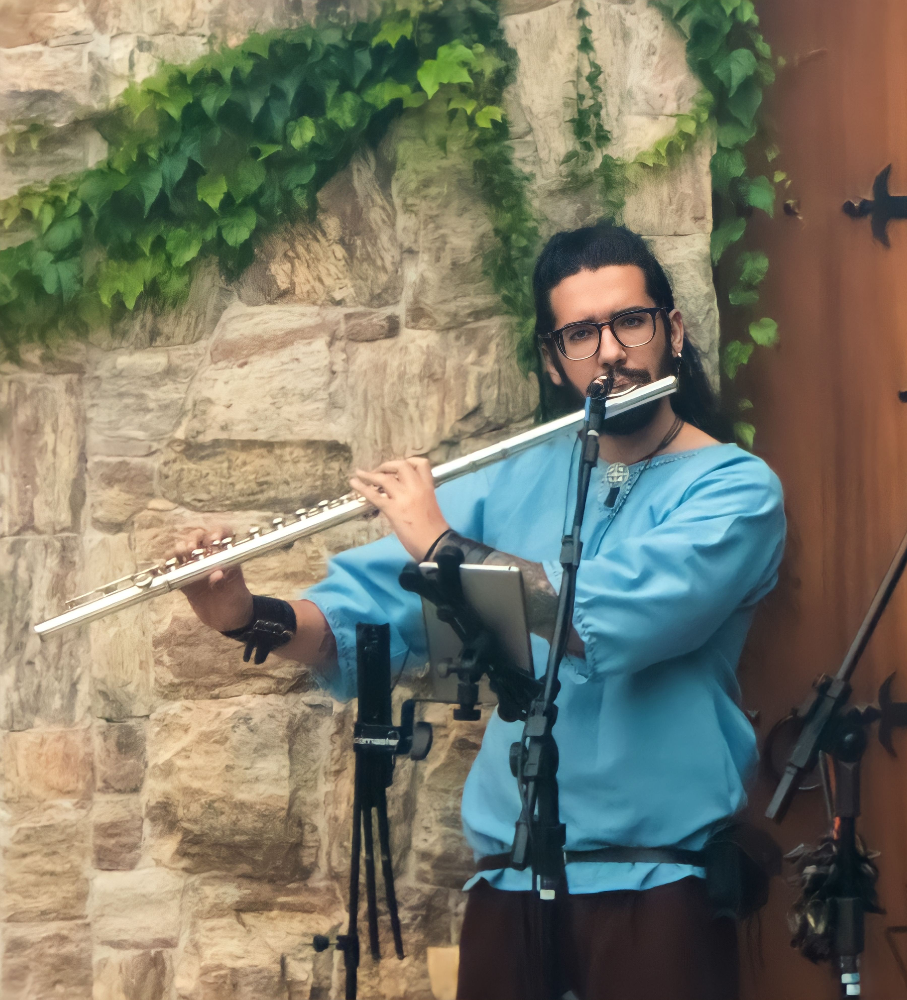

Prazer, Mateus Messias!
Minha paixão pela música começou na infância e desde então já toquei em palcos como a Sala São Paulo e o Theatro São Pedro.
Me formei em Flauta pela UFPel, fiz especialização na EMESP Tom Jobim e hoje curso mestrado na UNICAMP, pesquisando a obra de Nivaldo Ornelas. Além de me apresentar em grupos como o Quinteto Dona Niza, também ensino música, compartilhando minha experiência que une o erudito e o popular.
mais sobre
Mateus Messias
Natural de Jundiaí, no interior de São Paulo, Mateus Messias é flautista, compositor e professor, com uma carreira que transita entre a música erudita e a popular. Seu contato com a flauta começou ainda na infância, aos 7 anos, na Escola de Música de Jundiaí e no Projeto Guri, onde rapidamente se destacou ao integrar o Grupo de Referência - Orquestra Sinfônica, se apresentando em renomados palcos brasileiros, como o Theatro São Pedro, o Teatro Polytheama e a Sala São Paulo.
Sua trajetória acadêmica seguiu na Escola de Música do Estado de São Paulo – EMESP Tom Jobim e ao longo de sua formação, Mateus teve aulas com grandes nomes da música brasileira, como Eduardo Neves, Vinícius Dorin e Realcino Lima (Nenê). Em 2015, se mudou para Pelotas, no Rio Grande do Sul, para cursar o Bacharelado em Música na Universidade Federal de Pelotas, onde foi orientado pelo Prof. Dr. Raul Costa d'Avila. Durante sua graduação, participou de importantes festivais e masterclasses com ícones da flauta como Emmanuel Pahud (SUI), Christie Beard (EUA) e Celso Woltzenlogel (BRA), além de trabalhar com diversos professores e músicos de destaque mundial. Seu envolvimento com a pesquisa acadê- mica também o levou a publicações nos anais dos Congressos de Iniciação Científica da UFPel, sendo premiado como "destaque" em 2018. Nesse mesmo ano, apresentou seus trabalhos no Festival Internacional de Flautistas da ABRAF.
Ao longo da carreira, Mateus explorou diversas formações musicais, desde duos com piano e violão até apresentações com orquestras e bandas sinfônicas. Destacam-se sua atuação no Festival Internacional Sesc de Música de Pelotas e na Orquestra de Flautas do Festival Internacional de Flautistas da ABRAF. Na música popular, sua participação no grupo de música medieval "A Barda" e no quinteto de jazz e música brasileira MAGA lhe proporcionaram experiências importantes, incluindo a abertura do Thorhammerfest, um dos maiores festivais de cultura nórdica do Brasil. Graduado pela Universidade Federal de Pelotas, Mateus retornou a Jundiaí em 2020, onde continua a carreira como músico profissional, realizando apresentações e lecionando para diversos alunos. Em 2022, concluiu sua Especialização em Flauta Transversal pela EMESP Tom Jobim, com orienta- ção de Marta Ozzetti e Edmilson Capelupi. Entre os anos de 2022 e 2024, Mateus integrou a Orquestra Sinfônica Municipal de Jundiaí, sob regência da maestrina Cláudia Feres e atualmente cursa o Mestrado em Música pela UNICAMP, sob orientação da Prof. Dr. Thais Lima Nicodemo, com pesquisa dedicada à obra para flauta de Nivaldo Ornelas. Seu mais recente trabalho vem sendo realizado com o Quinteto Dona Niza, grupo voltado para música instrumental principalmente brasileira
fecharTrabalhos
I Vivace Spirituoso
Uma interpretação da Orquestra Sinfônica Municipal de Jundiaí que celebra a riqueza musical de Osvaldo Lacerda.
Naima (John Coltrane)
Uma homenagem ao gênio do jazz, John Coltrane. Uma performance inesquecível com o Quinteto Maga
Aulas e Workshop
com Mateus Messias
Aprenda flauta transversal com um professor experiente, que une técnica refinada e musicalidade para atender tanto iniciantes quanto músicos avançados.
 Entre em contato